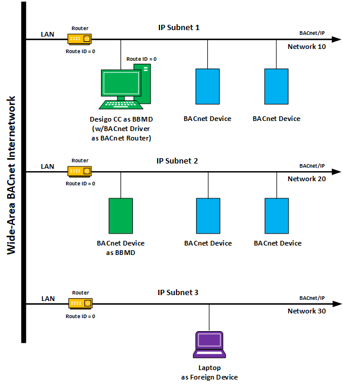

BACnet
This section contains background information for BACnet drivers, networks, and devices. For procedures or workflows, see the step-by-step section.
Overview
BACnet® is a widely accepted, non-proprietary data communication protocol for Building Automation and Control Networks. Known as ANSI/ASHRAE Standard 135-2020, BACnet ensures equipment interoperability from over 1000 different vendors and is deployed in more than 25 million devices worldwide across multiple application domains such as HVAC, lighting, access control, elevators, and fire. BACnet is backward compatible with older versions, and it is scalable from simple devices to advanced workstations.
How BACnet Works
Like most building control systems, BACnet groups devices into networks, which can be on the same or different physical wires. BACnet uses hardware devices called BACnet routers to connect these different BACnet networks into a larger BACnet internetwork.
The BACnet driver on a Desigo CC management station functions as a BACnet router, which allows it to connect to a BACnet internetwork. By default, all BACnet networks have the same Route ID, which allows devices on different networks to communicate with each other—even if multiple network interface cards are used. If network connections do not have the same Route ID, the BACnet driver will not act as a router. This means that networks can communicate only with the management station but not with each other—a useful scenario for isolating a fire network from a building control network.
BACnet Configurations
There are many different BACnet configurations possible using a variety of protocols. For the sake of simplicity, however, the following illustration shows a directly connected BACnet internetwork comprised of multiple IP subnets using only the BACnet IP protocol. All of the networks can communicate with each other because they share the same Route ID of 0 (zero). Here is a brief explanation of each subnet on the network:
- IP Subnet 1 consists of the Desigo CC management station serving as a BACnet Broadcast Management Device (BBMD) and as a BACnet router since the BACnet driver resides here.
- IP Subnet 2 consists of third-party BACnet devices, one of which is configured as a BBMD. The BACnet protocol uses broadcast messages called Who-Is and I-Am to interrogate the network and discover other BACnet devices that exist on the internetwork. For these messages to be transmitted across restrictive IP routers, one device on each IP subnet must be set up as a BBMD.
- IP Subnet 3 consists of a laptop functioning as a Foreign Device (FD). The laptop can communicate directly with any other device on the network, but it must register with a BBMD to receive broadcasts from devices on other IP subnets. If the laptop in this configuration registers with the BBMD on IP Subnets 1 and 2, the FD will be able to receive broadcasts from all the devices on those subnets.
